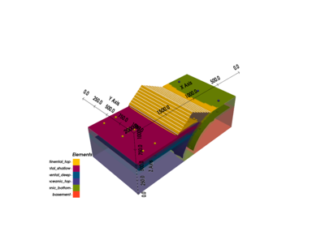

gempy.core.data.StructuralFrame¶
- class gempy.core.data.StructuralFrame(structural_groups: list[StructuralGroup], color_gen: ColorsGenerator)[source]¶
Represents a structural frame, which is a collection of structural groups that constitute a geological model.
- structural_groups¶
List of structural groups that constitute the geological model.
- Type:
list[StructuralGroup]
- color_generator¶
Instance of ColorsGenerator used for assigning distinct colors to different structural elements.
- Type:
- is_dirty¶
Boolean flag indicating if the structural frame has been modified.
- Type:
bool
Examples using
gempy.core.data.StructuralFrame¶Video Tutorial “code-along”: Onlap relations
Video Tutorial "code-along": Onlap relationsMethods
__init__(structural_groups, color_gen)append_group(group)deserialize_orientations()deserialize_surface_points()from_data_tables(surface_points, orientations)get_element_by_name(element_name)get_group_by_element(element)get_group_by_name(group_name)Initialize the default structure.
insert_group(index, group)Attributes
basement_colorReturns a dictionary mapping element IDs to names.
Returns a dictionary mapping element names to IDs.
Returns a list of colors assigned to each structural element.
Returns a list of colors assigned to each structural element for contact representation.
Returns a list of colors assigned to each structural element for orientation representation.
Returns a list of colors assigned to each structural element for volume representation.
Returns an array of IDs for all structural elements.
Returns a list of names of all structural elements.
Returns a array describing the fault relations between the structural groups.
Returns a descriptor for the input data, detailing the relations and faults between groups.
Returns a list of booleans indicating if each structural element is a fault.
Returns a list of booleans indicating if each structural element is a lithology.
Returns a list of the structural relations for each group.
Returns a dictionary mapping each structural group to its corresponding elements.
Returns a descriptor for the input data, detailing the relations and faults between groups.
Returns the total number of elements in the structural frame.
Returns the total number of elements in the structural frame.
Returns an array with the number of elements for each structural group.
Returns an array with the number of orientations for each structural group.
Returns an array with the number of points for each structural element.
Returns an array with the number of points for each structural group.
orientationsReturns a list of colors assigned to each orientation across structural elements.
Returns an OrientationsTable for all orientations across the structural elements.
serialize_orientationsserialize_spReturns a list of all structural elements across the structural groups.
surface_pointsReturns a list of colors assigned to each surface point across structural elements.
Returns a SurfacePointsTable for all surface points across the structural elements.
Returns a list of all surfaces in the structural elements.
Returns a DataFrame representation of all surfaces across structural elements.
- __init__(structural_groups: list[StructuralGroup], color_gen: ColorsGenerator)[source]¶
- classmethod initialize_default_structure() StructuralFrame[source]¶
Initialize the default structure.
This method is used to initialize the default structure for a StructuralFrame object.
- Parameters:
None
- Returns:
A StructuralFrame object representing the default structure.
- Return type:
‘StructuralFrame’
Example
structural_frame = initialize_default_structure()
- property structural_elements: list[StructuralElement]¶
Returns a list of all structural elements across the structural groups.
- property n_elements: int¶
Returns the total number of elements in the structural frame.
- property fault_relations: ndarray¶
Returns a array describing the fault relations between the structural groups.
- property group_is_fault: list[bool]¶
Returns a list of booleans indicating if each structural element is a fault.
- property group_is_lithology: list[bool]¶
Returns a list of booleans indicating if each structural element is a lithology.
- property input_data_descriptor¶
Returns a descriptor for the input data, detailing the relations and faults between groups.
- property faults_input_data¶
Returns a descriptor for the input data, detailing the relations and faults between groups.
- property groups_structural_relation: list[StackRelationType]¶
Returns a list of the structural relations for each group.
- property number_of_points_per_element: ndarray¶
Returns an array with the number of points for each structural element.
- property number_of_points_per_group: ndarray¶
Returns an array with the number of points for each structural group.
- property number_of_orientations_per_group: ndarray¶
Returns an array with the number of orientations for each structural group.
- property number_of_elements_per_group: ndarray¶
Returns an array with the number of elements for each structural group.
- property surfaces: list[StructuralElement]¶
Returns a list of all surfaces in the structural elements.
- property number_of_elements: int¶
Returns the total number of elements in the structural frame.
- property elements_names: list[str]¶
Returns a list of names of all structural elements.
- property elements_ids: ndarray¶
Returns an array of IDs for all structural elements.
- property surface_points_copy: SurfacePointsTable¶
Returns a SurfacePointsTable for all surface points across the structural elements. This is a copy!
- property orientations_copy: OrientationsTable¶
Returns an OrientationsTable for all orientations across the structural elements.
- property element_id_name_map: dict[int, str]¶
Returns a dictionary mapping element IDs to names.
- property element_name_id_map: dict[str, int]¶
Returns a dictionary mapping element names to IDs.
- property elements_colors: list[str]¶
Returns a list of colors assigned to each structural element. Used in matplotlib
- property elements_colors_volumes: list[str]¶
Returns a list of colors assigned to each structural element for volume representation. Used in pyvista
- property elements_colors_contacts: list[str]¶
Returns a list of colors assigned to each structural element for contact representation. Used in many places
- property elements_colors_orientations: list[str]¶
Returns a list of colors assigned to each structural element for orientation representation. Used to paint orientations in pyvista
- property surface_points_colors_per_item: list[str]¶
Returns a list of colors assigned to each surface point across structural elements. Used in matplotlib
- property orientations_colors_per_item: list[str]¶
Returns a list of colors assigned to each orientation across structural elements. Used in matplotlib
- property groups_to_mapper: dict[str, list[str]]¶
Returns a dictionary mapping each structural group to its corresponding elements.
- property surfaces_df: pd.DataFrame¶
Returns a DataFrame representation of all surfaces across structural elements.